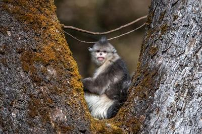
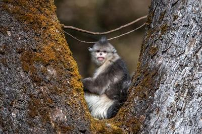

圣山真颜
纳西族神山，海拔5396米，云南省境内第四高峰
纳西族神山，海拔5396米，云南省境内第四高峰
哈巴雪山形成于喜马拉雅造山运动时期，是横断山脉的重要组成部分。山体主要由古生代的石灰岩、大理岩和玄武岩构成，经过长期的地质作用和冰川侵蚀，形成了如今陡峭的山峰和深邃的峡谷。
哈巴雪山的主峰海拔5396米，是云南省境内第四高峰，也是著名的"滇西北雪山群"的重要成员。山顶终年积雪不化，发育有现代冰川，其中最长的冰川达到2公里以上。
 

哈巴雪山拥有完整的垂直生态系统，从山脚到山顶分布着7个不同的植被带，包括亚热带常绿阔叶林、温带落叶阔叶林、寒温带针叶林、亚高山灌丛草甸、高山草甸、高山流石滩植被和永久冰雪带。
这里是众多珍稀动植物的家园，包括国家一级保护动物滇金丝猴、黑颈鹤、云豹等，以及国家二级保护动物黑熊、小熊猫、林麝等。植物方面，哈巴雪山分布着虫草、雪莲花、松茸等珍贵药材。
哈巴雪山是纳西族心目中的神山，被称为"哈巴罗吉"，意为"金子之花朵"。在纳西族的传统文化中，哈巴雪山是神灵居住的地方，也是纳西族的祖先发源地。每年农历七月十五，当地纳西族会举行盛大的祭山仪式，祈求风调雨顺、五谷丰登。
传说中，哈巴雪山和玉龙雪山是一对孪生兄弟。他们共同守护着这片土地，抵御外敌入侵。有一天，恶魔想要抢夺他们守护的宝藏，哈巴为了保护宝藏，与恶魔展开了激烈的战斗。最终，哈巴不幸被恶魔砍断了头颅，化作了今天的哈巴雪山。而玉龙则继续守护着这片土地，成为了现在的玉龙雪山。
哈巴雪山的壮丽景色吸引了无数文人墨客的目光，成为了文学和艺术创作的重要题材。英国作家詹姆斯·希尔顿在其著名小说《消失的地平线》中，将哈巴雪山描绘成了一个神秘而美丽的世外桃源，进一步提升了哈巴雪山在世界范围内的知名度。
哈巴雪山以其壮丽的自然风光和独特的人文景观，成为了摄影爱好者的天堂。无论是雪山日出、云海翻腾，还是山间的溪流、茂密的森林，都是绝佳的拍摄题材。特别是在冬季，雪后的哈巴雪山更是银装素裹，美不胜收。
哈巴雪山因其相对较低的海拔和较为成熟的登山路线，成为了许多登山爱好者挑战自我的首选目的地。每年都有大量的登山者来到这里，尝试征服这座神圣的山峰。对于有一定登山经验的人来说，哈巴雪山是一个不错的选择，可以体验到高海拔登山的乐趣和挑战。
探索哈巴雪山的壮丽景观